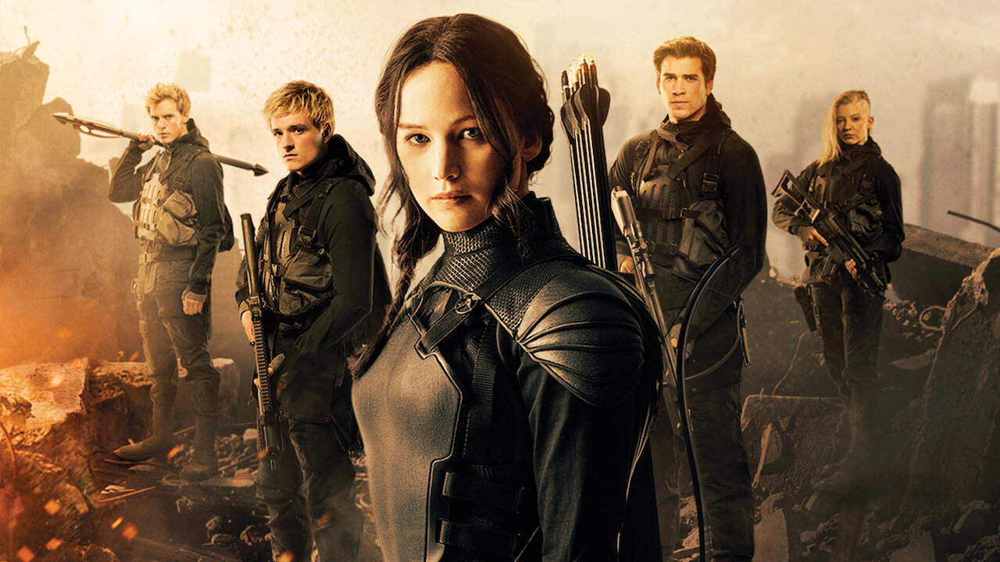

Jogos Vorazes conta a história de Katniss, que participa de uma competição mortal organizada pela Capital. Para sobreviver, ela precisa enfrentar outros jovens e acaba se tornando símbolo de uma revolução.
“Que a sorte esteja sempre a seu favor.” 🍀
